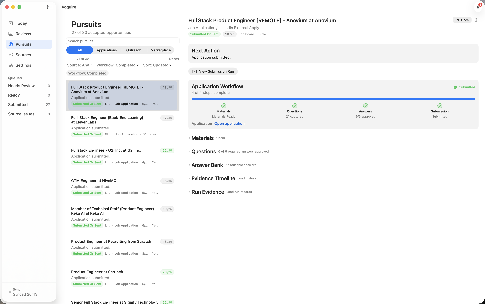

The problem
Notes, drafts, and follow-ups were split apart.
The cost
The solution
Each opportunity has a status and next step.

How it works
Check it first, then let the work move.
The result
Materials, answers, status, and blockers stay together.
Why it matters
Work is easier to review, approve, and move forward.